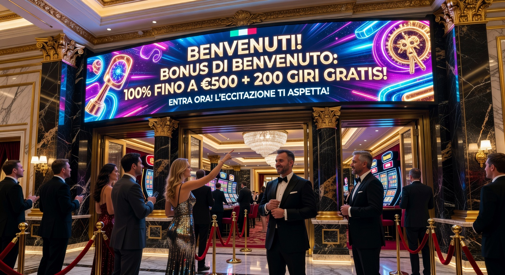
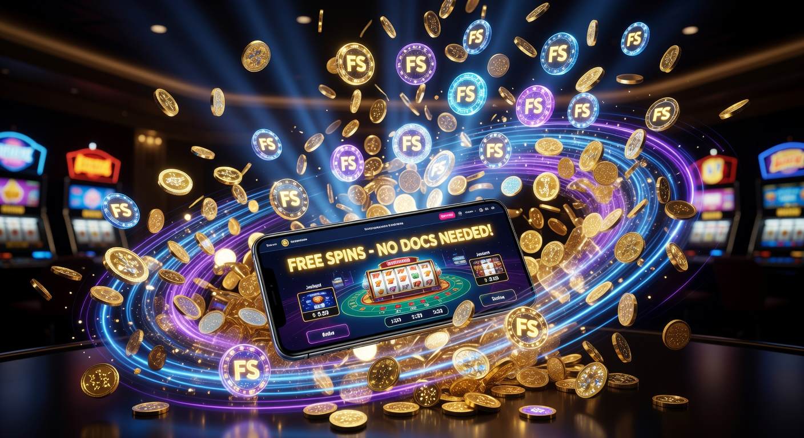
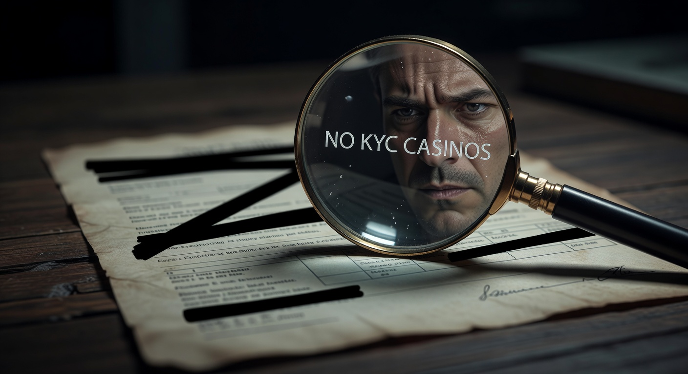
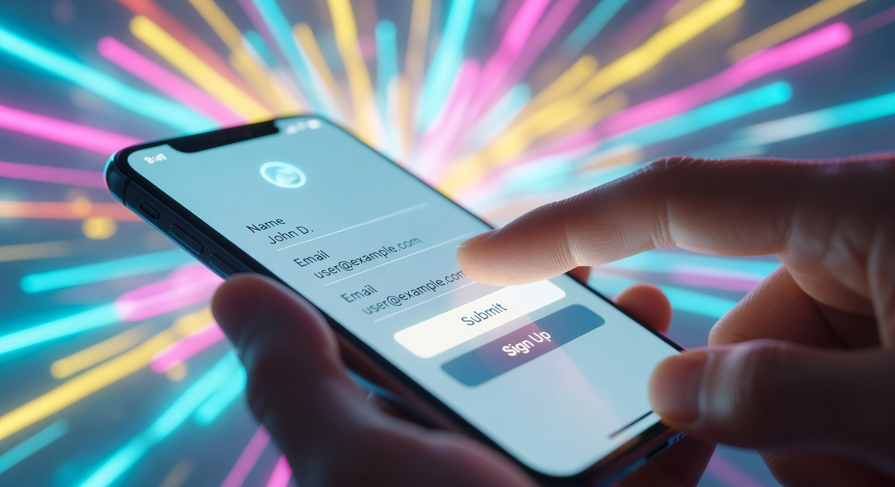
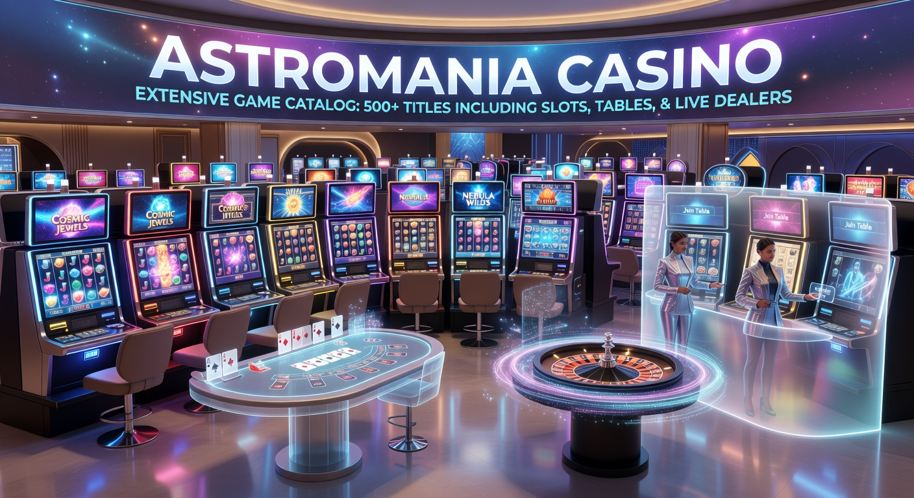

Astromania Casinò: La Guida Definitiva al Sito Ufficiale
Nel panorama iGaming del 2026, l'innovazione tecnologica ha raggiunto vette precedentemente inimmaginabili. Tra le piattaforme che hanno saputo interpretare meglio questa evoluzione, astromania casino si distingue come un ecosistema di intrattenimento completo e all'avanguardia. Questo portale non è solo un semplice sito di scommesse, ma una vera e propria esperienza interstellare che combina blockchain, intelligenza artificiale e un catalogo di titoli vastissimo.
I giocatori italiani, sempre più esigenti in termini di privacy e velocità, trovano in questa piattaforma una risposta concreta alle loro necessità. Grazie all'integrazione di sistemi di pagamento di ultima generazione e a una politica di gestione dell'identità meno invasiva rispetto ai giganti del passato, il sito ha conquistato una quota di mercato significativa nel 2026. In questa guida esploreremo ogni angolo di questo universo digitale.
La professionalità del team dietro il progetto emerge chiaramente dalla cura dei dettagli grafici e dalla stabilità dell'infrastruttura IT. Navigare su questa piattaforma significa immergersi in un ambiente sicuro, dove la trasparenza delle transazioni è garantita da protocolli crittografici avanzati. Se state cercando un luogo dove il divertimento incontra la tecnologia, siete nel posto giusto.
Introduzione al Mondo del Gaming Spaziale
Il concetto di gioco online si è evoluto drasticamente negli ultimi anni. Nel 2026, gli utenti non si accontentano più di una grafica bidimensionale; cercano immersione e interattività. Astromania casino ha saputo cavalcare l'onda del Web3, offrendo un'interfaccia fluida che risponde istantaneamente ai comandi, riducendo la latenza a livelli prossimi allo zero.
Il tema spaziale non è solo estetico, ma permea ogni aspetto dell'esperienza utente. Dalle missioni quotidiane per sbloccare premi ai tornei galattici che mettono in palio montepremi astronomici, tutto è pensato per far sentire il giocatore parte di una flotta stellare. Questo approccio ludico, unito a una solida base tecnologica, rende il portale un punto di riferimento per gli appassionati di IT e gaming.
Per chi cerca alternative altrettanto valide nel 2026, piattaforme come Millioner offrono soluzioni di altissimo livello, con programmi fedeltà personalizzati e una selezione di giochi curata dai migliori provider globali. La varietà è la chiave per mantenere alto l'interesse in un mercato così competitivo.
Bonus di Benvenuto e Offerte promozionali - Astromania casino app

Le strategie di marketing nel 2026 si sono affinate, spostandosi verso bonus dinamici che si adattano al comportamento del giocatore. Su astromania casino, il pacchetto di ingresso è strutturato per fornire una spinta iniziale significativa, permettendo di esplorare le diverse sezioni del sito senza intaccare eccessivamente il budget personale.
Oltre alla componente monetaria, le promozioni includono spesso vantaggi accessori come l'accesso prioritario a nuovi lanci di slot o inviti a eventi virtuali esclusivi. È fondamentale leggere attentamente i termini e le condizioni, che in questo 2026 sono diventati molto più trasparenti e facili da consultare rispetto al passato.
Come Funziona il Bonus Crab
Una delle caratteristiche più originali di questa piattaforma è senza dubbio il Bonus Crab. Si tratta di una funzione di gamification che permette ai giocatori di partecipare a una sorta di "pesca fortunata" virtuale. Utilizzando i crediti accumulati con i depositi, è possibile manovrare un artiglio meccanico digitale per afferrare premi che variano da bonus in denaro a giri gratuiti.
Questa meccanica aggiunge un livello di coinvolgimento extra, trasformando un semplice deposito in un'opportunità di gioco immediata. Il successo di questa iniziativa ha spinto molti altri operatori a implementare sistemi simili, ma l'implementazione su astromania casino rimane una delle più fluide e gratificanti del settore.
Giri Gratuiti e Welcome Bonus per Nuovi Iscritti
I nuovi utenti possono beneficiare di un generoso welcome bonus che spesso include una combinazione di credito extra e una serie di giri gratuiti. Questi ultimi sono solitamente utilizzabili sulle slot machine più popolari del momento, permettendo di testare la qualità del software senza rischi. Nel 2026, la gestione di questi bonus è diventata istantanea: non appena viene completato il primo deposito, il sistema accredita automaticamente i vantaggi sul conto.
È interessante notare come il bonus di benvenuto sia strutturato su più livelli, premiando non solo il primo versamento ma anche i successivi, garantendo così una longevità maggiore all'esperienza iniziale. Molte recensioni sottolineano come questa politica di retention sia uno dei punti di forza del sito.
Giri Gratis senza documenti

Uno dei trend più forti del 2026 è la ricerca di giri gratuiti che non richiedano l'invio immediato di tonnellate di documenti burocratici. Molti giocatori preferiscono testare la piattaforma prima di impegnarsi in un processo di verifica KYC (Know Your Customer) completo. Su questa piattaforma, è possibile ricevere offerte promozionali e iniziare a giocare in tempi record.
La possibilità di ottenere casino senza documenti benefici immediati è un incentivo formidabile. Questo non significa che la sicurezza sia trascurata, ma che i processi sono stati ottimizzati grazie all'uso di identità digitali decentralizzate e sistemi di validazione automatica che operano in background senza disturbare l'utente.
Se cercate un'esperienza simile, vi consigliamo di dare un'occhiata a Roulettino, un portale che ha fatto della velocità e della semplicità i suoi pilastri fondamentali per tutto il 2026.
"No documents" = no KYC?

Esiste spesso una confusione tra il concetto di giocare senza documenti e l'assenza totale di procedure KYC. Nel 2026, il settore si è evoluto verso quello che viene definito "Silent KYC". Questo significa che astromania casino e altre piattaforme d'élite utilizzano dati verificati tramite i metodi di pagamento (come i crypto wallet o i conti bancari aperti con sistemi biometrici) per confermare l'identità dell'utente.
Quindi, mentre l'utente non deve caricare manualmente foto della carta d'identità o bollette della luce, i requisiti legali di antiriciclaggio sono comunque soddisfatti in modo invisibile e sicuro. Questo approccio garantisce la massima privacy per il giocatore e la massima conformità per l'operatore, un equilibrio perfetto raggiunto solo recentemente.
Inoltre, l'uso di tecnologie come lo ZKP (Zero-Knowledge Proof) permette di dimostrare di avere l'età legale per giocare senza rivelare la data di nascita esatta o altre informazioni personali sensibili, segnando un passo avanti epocale per la protezione dei dati nel 2026.
Iscrizione velocizzata

La rapidità è l'essenza dell'era digitale. La procedura di iscrizione velocizzata su astromania casino è stata progettata per richiedere meno di un minuto. Attraverso l'integrazione con i principali social network o, meglio ancora, con i wallet Web3, è possibile creare un account con un solo clic. Questo elimina la frustrazione di dover compilare lunghi moduli con indirizzi e numeri di telefono.
Una volta creato il profilo, l'utente è subito pronto per effettuare il suo primo deposito e riscattare il welcome bonus. In questo contesto di efficienza, anche la piattaforma Wyns si distingue per un processo di onboarding estremamente fluido, ideale per chi non vuole perdere tempo e desidera passare subito all'azione.
L'uso di protocolli di autenticazione sicuri garantisce che, nonostante la velocità, l'account rimanga protetto da accessi non autorizzati. Nel 2026, la sicurezza non viene mai sacrificata sull'altare della rapidità, ma le due viaggiano di pari passo grazie alle nuove infrastrutture IT.
Catalogo Giochi su Astromania Casinò

Il cuore pulsante di ogni sito di gaming è la sua libreria di titoli. Su astromania casino, la varietà è semplicemente sbalorditiva. Con oltre 8.000 titoli disponibili nel 2026, c'è qualcosa per ogni tipo di giocatore, dai nostalgici delle slot a tre rulli agli amanti delle esperienze cinematografiche in 3D. La navigazione all'interno del catalogo è facilitata da filtri intelligenti che imparano dalle preferenze dell'utente.
Ogni gioco è ottimizzato per garantire tempi di caricamento minimi, anche su connessioni non eccelse. La collaborazione con decine di studi di sviluppo assicura un flusso costante di novità, con almeno dieci nuovi titoli aggiunti ogni settimana. Questo dinamismo mantiene l'esperienza di gioco sempre fresca e stimolante.
Le Migliori Slot Machine di Pragmatic Play
Un nome che non ha bisogno di presentazioni nel 2026 è Pragmatic Play. Su questo portale, i loro titoli occupano spesso i posti d'onore. Le slot machine di questo fornitore sono celebri per le loro meccaniche innovative, come i moltiplicatori progressivi e le funzioni "Hold & Spin". Titoli come "Wolf Gold 2026" e "Sweet Bonanza Deluxe" continuano a essere i preferiti del pubblico per la loro alta volatilità e il potenziale di vincita elevato.
La fluidità delle animazioni e la qualità del comparto sonoro rendono ogni sessione su una slot di Pragmatic Play un vero piacere per i sensi. Inoltre, l'integrazione dei tornei "Drops & Wins" direttamente nell'interfaccia di astromania casino offre ai giocatori la possibilità di vincere premi casuali in qualsiasi momento, semplicemente girando i rulli.
Casinò Live e Tavoli in Diretta
Per chi cerca l'emozione di una vera sala da gioco, la sezione Casinò Live è il posto giusto. Grazie a streaming in altissima definizione (4K e 8K nel 2026), i giocatori possono interagire con croupier professionisti in tempo reale. I tavoli di Blackjack, Roulette e Baccarat sono disponibili in diverse varianti e lingue, inclusa l'italiano.
L'interazione non si limita solo al gioco: è possibile chattare con gli altri partecipanti, creando un senso di comunità che spesso manca nel gioco online tradizionale. Tecnologie come la realtà aumentata (AR) vengono utilizzate per mostrare statistiche in tempo reale sopra il tavolo verde, aiutando i giocatori a prendere decisioni più informate durante la partita.
Metodi di Pagamento e Limiti di Prelievo
La gestione del denaro è un aspetto critico per ogni utente. Nel 2026, astromania casino offre una flessibilità senza precedenti. Oltre ai metodi tradizionali, la piattaforma ha abbracciato completamente il mondo delle criptovalute, offrendo transazioni quasi istantanee e commissioni ridotte al minimo.
I limiti di prelievo sono pensati per accomodare sia i giocatori occasionali che i grandi scommettitori. Le procedure di prelievo sono state automatizzate per la maggior parte dei casi, il che significa che una volta approvata la richiesta, i fondi possono apparire sul conto dell'utente in pochi minuti, specialmente se si utilizzano portafogli elettronici o asset digitali.
| Metodo di Pagamento | Tempo di Deposito | Tempo di Prelievo | Commissioni |
|---|---|---|---|
| Bitcoin (BTC) | Istantaneo | < 30 min | 0% |
| Ethereum (ETH) | Istantaneo | < 15 min | 0% |
| Visa / Mastercard | Istantaneo | 1-3 Giorni | 0% |
| MiFinity | Istantaneo | < 24 ore | 0% |
| Litecoin (LTC) | Istantaneo | < 15 min | 0% |
Opzioni di Ricarica e Prelievo delle Vincite
Oltre alle opzioni menzionate in tabella, astromania casino supporta anche sistemi come Jeton, Skrill e Neteller. Per chi preferisce soluzioni prepagate, Paysafecard rimane un'opzione valida, sebbene limitata ai depositi. La vera rivoluzione del 2026 è però rappresentata dall'integrazione di Trustly, che permette pagamenti diretti dal conto bancario con la stessa velocità di una carta di credito ma con una sicurezza superiore.
I giocatori più orientati alla privacy utilizzano spesso BTC o altre crypto per mantenere un profilo basso. La piattaforma garantisce che ogni transazione sia protetta da protocolli SSL di ultima generazione, assicurando che i dati finanziari non vengano mai intercettati da terze parti malintenzionate. Per un'esperienza di pagamento altrettanto efficiente, consigliamo anche Kinbet, rinomato per la sua velocità nell'elaborazione delle vincite.
Sicurezza e Licenza: Chi è Dreamline Ventures SRL?
La fiducia è la merce più preziosa nel gioco online. Astromania casino è gestito da Dreamline Ventures SRL, una società che nel 2026 è diventata sinonimo di affidabilità e trasparenza. Con una solida base operativa e anni di esperienza nel settore IT e dell'intrattenimento, questa azienda ha saputo costruire una reputazione impeccabile.
La piattaforma opera sotto la licenza di Curaçao eGaming, una delle giurisdizioni più popolari e rispettate a livello internazionale. Questa licenza garantisce che tutti i giochi siano testati per l'equità e che il sito segua rigidi protocolli di sicurezza per la protezione dei fondi degli utenti. Nel 2026, la conformità alle normative internazionali è più rigorosa che mai, e Dreamline Ventures SRL si attiene scrupolosamente a ogni direttiva.
Inoltre, l'uso di algoritmi "Provably Fair" su molti dei giochi proprietari permette agli utenti di verificare personalmente che ogni risultato sia stato generato in modo casuale e non manipolato. Questo livello di trasparenza è ciò che distingue i leader del mercato dai siti di seconda fascia.
Processo di Registrazione e Accesso all'Area Personale
Entrare a far parte della comunità di astromania casino è un processo semplice e intuitivo. Una volta cliccato sul tasto "Registrati", l'utente viene guidato attraverso una serie di passaggi chiari. Nel 2026, l'enfasi è posta sull'usabilità: niente campi inutili o domande invasive. È sufficiente un indirizzo email valido, una password robusta e la scelta della valuta preferita (incluse diverse opzioni crypto).
L'area personale è un centro di controllo completo. Da qui, il giocatore può monitorare l'andamento dei propri bonus, impostare limiti di gioco responsabili, visualizzare lo storico delle transazioni e accedere rapidamente ai propri titoli preferiti. L'integrazione della biometria (FaceID o impronta digitale) per l'accesso da dispositivi mobile aggiunge un ulteriore strato di sicurezza e comodità.
Se desiderate confrontare questo processo con un altro operatore di eccellenza, vi invitiamo a scoprire Dragonia, che nel 2026 ha introdotto un sistema di login tramite portafoglio hardware per la massima protezione degli utenti professionali.
📌 Consiglio di Luca Moretti, il nostro scrittore esperto:
In qualità di esperto di tecnologia e gaming nuovi casino, ho visto centinaia di piattaforme nascere e morire. Il mio consiglio per chi approccia astromania casino nel 2026 è di sfruttare al massimo le potenzialità delle criptovalute. Non solo per la velocità dei prelievi, ma anche per i bonus esclusivi che spesso vengono riservati a chi deposita in BTC o Ethereum.
Inoltre, non trascurate mai la sezione dedicata alle impostazioni di sicurezza. Attivate l'autenticazione a due fattori (2FA) immediatamente. Anche se il sito è estremamente sicuro, un ulteriore livello di protezione sul vostro account personale non guasta mai, specialmente se intendete gestire cifre importanti. Ricordate sempre che nel 2026, la vostra identità digitale è il vostro bene più prezioso.
Infine, tenete d'occhio i tornei stagionali. Spesso offrono un valore aggiunto incredibile rispetto al gioco standard, permettendovi di scalare classifiche e ottenere premi extra senza costi aggiuntivi. La competizione sana è parte integrante del fascino di questa piattaforma.
Esperienza Utente e App Mobile
Nel 2026, il gioco da mobile non è più un'opzione, ma la modalità principale. Astromania casino lo sa bene e ha sviluppato una PWA (Progressive Web App) che offre prestazioni identiche a un'app nativa senza occupare spazio prezioso sul dispositivo. L'interfaccia si adatta perfettamente a schermi di ogni dimensione, garantendo che l'esperienza di gioco sia fluida sia su smartphone che su tablet.
Il design "Mobile First" assicura che tutti i pulsanti siano facilmente raggiungibili e che la navigazione tra le diverse sezioni sia naturale. Anche le sessioni di casinò live sono ottimizzate per il mobile, con stream che caricano velocemente e controlli touch intuitivi. Questo impegno per l'eccellenza tecnica è ciò che permette al sito di primeggiare nel 2026.
Altre piattaforme come Mr.Pacho e LamaBet hanno seguito percorsi simili, ma la fluidità dell'interfaccia spaziale di questo portale rimane un gradino sopra per quanto riguarda il coinvolgimento estetico e la reattività del software.
Perché molti utenti italiani evitano la verifica dell'identità
La tendenza verso i casino senza documenti nel 2026 non è dettata dalla volontà di eludere le regole, ma da un profondo desiderio di privacy e protezione dei dati personali. In un'epoca di frequenti violazioni di database aziendali, gli utenti sono restii a condividere scansioni di documenti d'identità con troppi soggetti diversi.
Astromania casino intercetta questa esigenza offrendo percorsi di verifica alternativi e meno invasivi. Gli utenti italiani apprezzano la possibilità di mantenere il controllo sulle proprie informazioni sensibili, pur operando all'interno di un ambiente regolamentato e sicuro. Questo approccio ha ridotto significativamente le frizioni durante la fase di prelievo, migliorando la soddisfazione complessiva del cliente.
Inoltre, la velocità di elaborazione che deriva dall'assenza di verifiche manuali dei documenti è un vantaggio competitivo enorme. In un mondo che corre a 10Gbps, aspettare tre giorni per la convalida di una carta d'identità sembra un retaggio del secolo scorso, qualcosa che nel 2026 non è più accettabile.
Opzioni di Scommesse Sportive e Bonus Sportivo
Sebbene il focus principale sia il casinò, astromania casino offre anche una sezione di scommesse sportive di altissimo livello. Il palinsesto copre centinaia di eventi quotidiani, dai campionati di calcio più famosi agli sport di nicchia e agli eSports, che nel 2026 hanno superato per volumi di gioco molte discipline tradizionali.
Il bonus sportivo è separato da quello del casinò e permette agli appassionati di scommesse di raddoppiare il loro primo deposito per piazzare giocate su quote molto competitive. L'interfaccia delle scommesse live è particolarmente avanzata, con aggiornamenti in tempo reale e la possibilità di fare cash-out istantaneo su quasi tutti gli eventi.
La varietà di mercati disponibili è impressionante: non solo i classici 1X2, ma anche una miriade di scommesse statistiche e combo che permettono di personalizzare al massimo la propria strategia. Anche qui, la velocità della piattaforma garantisce che le quote vengano accettate istantaneamente, evitando i fastidiosi ritardi che possono far perdere l'attimo giusto.
Confronto tra Astromania Casino e i Leader: 888Casino e WinBet
Nel mercato del 2026, il confronto con colossi storici come 888Casino e WinBet è inevitabile. Mentre questi ultimi mantengono una base di utenti fedeli grazie alla loro storia decennale, piattaforme più giovani e agili come astromania casino vincono sul fronte dell'innovazione tecnologica e della flessibilità dei pagamenti.
Mentre 888Casino tende a essere più conservatore nelle sue offerte e nei metodi di pagamento accettati, il portale spaziale abbraccia le nuove tecnologie con molta più decisione. WinBet, d'altro canto, offre un'ottima esperienza sulle scommesse, ma la sua sezione casinò non può competere con la vastità del catalogo e la qualità della gamification presente su questo sito.
In definitiva, la scelta dipende dalle priorità del giocatore. Se cercate stabilità e un brand istituzionale, i giganti del passato sono ancora lì. Ma se cercate l'avanguardia del gaming nel 2026, la velocità delle crypto e un'esperienza utente moderna, la scelta pende decisamente verso il nuovo universo di astromania casino.
Gioco Responsabile: Divertimento Consapevole
Nonostante l'atmosfera di divertimento e avventura, astromania casino prende molto seriamente la questione del gioco responsabile. Nel 2026, la tutela dell'utente è diventata un pilastro fondamentale dell'industria. La piattaforma offre strumenti avanzati di auto-esclusione e limiti di deposito personalizzabili che possono essere impostati direttamente dall'area personale.
Sistemi di intelligenza artificiale monitorano i pattern di gioco per individuare comportamenti a rischio e intervenire preventivamente, suggerendo pause o fornendo contatti per organizzazioni di supporto. Giocare deve rimanere un piacere, e la società si impegna affinché l'ambiente rimanga sano e controllato.
È importante ricordare che il gioco è vietato ai minori di 18 anni e che può causare dipendenza. Per maggiori informazioni sulle buone pratiche di gioco, è possibile consultare risorse autorevoli come la sezione dedicata di Wikipedia o i portali governativi sulla salute. Per chi desidera approfondire le dinamiche economiche del settore, siti come Forbes offrono spesso analisi interessanti sul mercato del gioco d'azzardo globale.
Recensioni dei Giocatori e Verdetto Finale
Le opinioni degli utenti su astromania casino nel 2026 sono largamente positive. I punti più lodati sono la velocità dei prelievi, la stabilità della piattaforma mobile e l'originalità delle funzioni come il Bonus Crab. Molti giocatori IT apprezzano anche la possibilità di utilizzare Ethereum e Litecoin per gestire i propri fondi in totale autonomia.
Certo, nessun sito è perfetto. Alcuni utenti segnalano che la vastità del catalogo può inizialmente confondere, ma i filtri di ricerca ben progettati risolvono rapidamente il problema. In generale, il livello di soddisfazione è molto alto, posizionando il portale tra i top player dell'anno 2026.
In conclusione, se state cercando un'esperienza di gioco moderna, sicura e tecnologicamente avanzata, astromania casino è una scelta eccellente. Che siate amanti delle slot di Pragmatic Play o dei tavoli live in alta definizione, troverete pane per i vostri denti in questo universo digitale in continua espansione.
Domande Frequenti (FAQ)
Astromania casino è sicuro e legale nel 2026?
Sì, la piattaforma è gestita da Dreamline Ventures SRL e opera con una licenza internazionale di Curaçao eGaming. Utilizza protocolli di crittografia avanzati e sistemi "Provably Fair" per garantire la massima sicurezza e trasparenza ai propri utenti.
Qual è il deposito minimo richiesto?
Il deposito minimo su astromania casino è generalmente di 10 o 20 euro, a seconda del metodo di pagamento scelto. Per chi utilizza criptovalute come Bitcoin o Litecoin, le soglie possono variare in base al valore di mercato attuale dell'asset.
Come posso riscattare il welcome bonus?
Il welcome bonus viene solitamente proposto durante la fase di primo deposito. Basta selezionare l'offerta desiderata e completare la transazione. Il bonus verrà accreditato istantaneamente insieme ai primi giri gratuiti del pacchetto promozionale.
È possibile giocare senza inviare documenti?
Sì, nel 2026 è possibile iniziare a giocare e godere dei bonus senza un caricamento immediato dei documenti d'identità, grazie ai sistemi di verifica automatizzata e all'uso di metodi di pagamento sicuri che fungono da garanzia per l'operatore.
Quali sono i tempi di prelievo per le vincite?
I tempi variano in base al metodo scelto. Con le criptovalute e i portafogli elettronici come MiFinity o Jeton, i prelievi sono spesso istantanei o richiedono meno di un'ora. Per le carte di credito tradizionali, possono essere necessari da 1 a 3 giorni lavorativi.
Quali giochi di Pragmatic Play sono disponibili?
Su astromania casino troverete l'intero catalogo di Pragmatic Play aggiornato al 2026, incluse le serie popolari come "Big Bass", "The Dog House" e le ultime novità con meccaniche Megaways e bonus interattivi.

Esperta di contenuti digitali e strategie SEO con oltre 6 anni di esperienza nel settore.